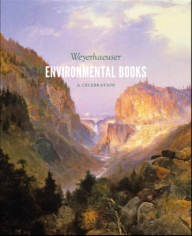
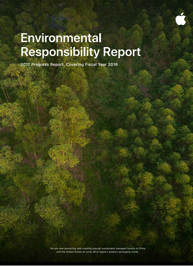
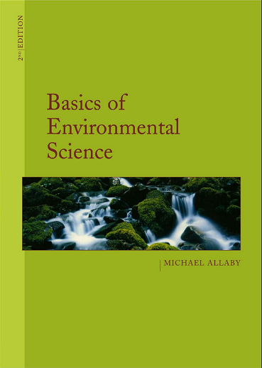
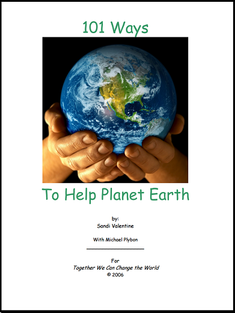
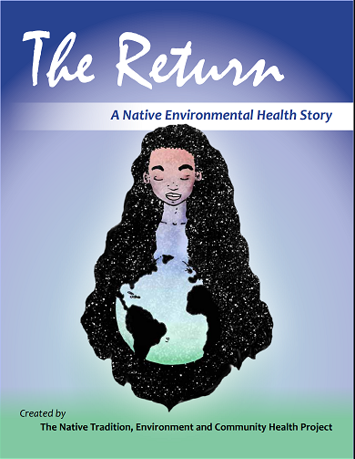
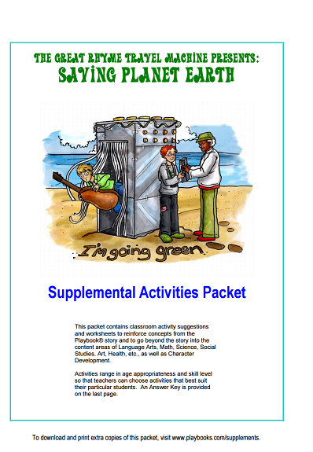

Weyerhaeuser ENVIRONMENTAL BOOKSWeyhaeuser ENVIRONMENTAL BOOKS is published by Unisversity of WASHINGTON PRESS.This books describes famous enviornmental books.In 1991,Jack and Jan Spearheaded,a major fund raising initiative to create a University of Washington Press endowment dedicated to publishing a new series of books on the environment, entitled Weyerhauser Environmental Books.... Read More |
Environmental Responsibility At AppleEnvironmental Responsibility At Apple is a book how Apple is doing for our enviornment and their estimations. Our Work is led by Lisa Jackson,Apple's Vice President of Environment,Policy and Social Initiatives,reporting directly to CEO Tim Cook..... Read More |
Basics of Environmental ScienceBasics of Environmental Science is 2nd Edition written by Michael Allaby.It is an engaging introduction to environmental study.The book offers everyone studying and interested in the environment,an essential understanding of natural environments and the way they function.... Read More |
101 Ways101 Ways is written by Sandi Valentine with Michael Plybon. Taking care of our Earth is no longer an option- it is a necessity.At times the chanllenge feels so overwhelmingly complicated that we give up before we even get started.Have you ever felt that way? Maybe you were active in earth-friendly activites in the past but didn't feel your efforts were making a difference and you've abandoned them or perhaps you just aren't as conscientious as you once were .... Read More |
The ReturnThe Return is a native Environmental Health Story written by Nicholas.The Native Tradition,Environment And Community Health(TEACH) Project began in 2008 with a small collaborative grant funded by the National Institute for Envrionmental Health Sciences. The Northwest Indian College and the Center for Ecogenetics and Environmental Health at the University of Washington shared the funding and co-managed the project.... Read More |
Saving Planet EarthSaving Planet Earth is a supplemental activities packet.This packet contains classroom activity suggestions and worksheets to reinforce concepts from the Playbook story and to go beyond the story into the content areas of language,Arts,Science,Social Studies,Art,Health,etc..,as well as Character Development.... Read More |